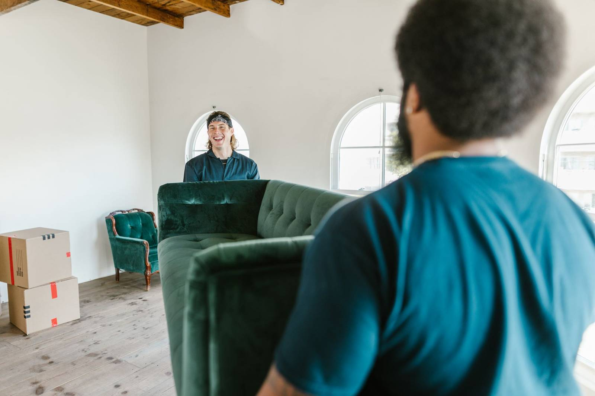

To get old furniture out before a new set is delivered, book the pickup for the day before delivery, or the morning of if the delivery window is late. Empty every drawer and cushion, strip the bed, and ask the store what it will and will not take away. A crew can carry out the old pieces and leave the room clear for the new ones.
Fall is when a lot of new furniture gets ordered. The holiday sales start, family is coming in a few weeks, and the sofa that has been sagging for years finally gets replaced. Then the delivery date arrives and the old one is still sitting exactly where the new one is supposed to go. Delivery crews are on a schedule, and a room that is not ready can mean pieces left in the garage or a rescheduled drop.
Start with the store
Before you book anything, ask the store one question: will the delivery crew take the old piece with them? Some do, often with conditions. They may only take the same kind of item they are delivering, only if it is already at the door, or only for an added charge. Some will not take mattresses at all. Get the answer in writing when you book delivery so there is no surprise at the door.
If the store takes the old sofa and that is all you need, use it. If you are also clearing the old nightstands, the bookcase, the rug and the mattress from the guest room at the same time, a single pickup for all of it is usually simpler than counting on the delivery crew.
Timing the pickup
The best slot for a pickup is the day before delivery. The room is empty for one night, the floors can be vacuumed or mopped where the old pieces sat, and nobody is rushing. If the delivery window is in the afternoon, the morning of works too.
Avoid booking the pickup for after delivery unless you have somewhere to put the new pieces. A new sectional in the garage next to the old one is how both end up blocking the cars for a week.
Check every drawer and cushion. Old furniture leaves the house with whatever is inside it. Remote controls, reading glasses, jewelry, cash and paperwork turn up in dresser drawers, recliner pockets and under sofa cushions. Pull every drawer all the way out and lift every cushion before pickup day.
What to do before the crew arrives
Empty everything first: drawers, shelves, cabinets, the storage under a bed frame and the pocket of a recliner. Strip the sheets, pads and pillows off the bed, and leave the mattress, box spring and frame where they are. Power recliners, adjustable bases and lighted cabinets have cords, so unplug them and leave the cords coiled on top.
Then look at the route out. Move the rugs, plants and side tables between the room and the door, or tell us which of them are going too. A second-floor bedroom set is a different carry than a ground-floor sofa, so mention the stairs when you send the photo.
You do not need to take anything apart. Bed frames come down to rails and headboards, sectionals separate at the brackets, and table legs come off when the doorway calls for it. Our post on getting old furniture out of the house covers the path out in more detail, and our post on old recliners and power recliners covers the motorized pieces.
Mattresses and bed bugs
If the old furniture is a mattress or a fabric sofa, take a look at the seams before it goes. The EPA's page on protecting your home from bed bugs notes that bed bugs can travel on furniture, bedding and boxes. If you see signs of them, tell us when you book. It changes how a piece is handled and where it can go. Our post on mattress disposal in DFW covers the rest of the mattress question.
Mattress swaps are one of the most common timing jobs we see. In Carrollton, a lot of our calls are an old mattress that has to be out before the new one is delivered, and the delivery window is what sets the pickup time. Carrollton's mix of established and newer neighborhoods means the old bedroom set comes out of everything from a long-owned two-story to a recent build, so tell us the floor when you write.
Where the old furniture goes
Clean, usable pieces go to local donation partners first. If you would rather donate the old set yourself, Habitat for Humanity's ReStore donation page explains what they accept, and our post on where to donate furniture in DFW covers the local options. Pieces that are broken, stained or worn through go to disposal, and metal frames go to a recycler.
The sorting is worth doing. The EPA's furniture and furnishings data puts 2018 generation at 12.1 million tons, with about 80 percent of it landfilled. Our stated goal is to keep more than half of every load out of the landfill.
Where these jobs come from
A lot of new furniture comes with a move. In Frisco, the old sectional often does not fit the floor plan of the new house, even when it is still in decent shape. In Dallas, the job often starts with the building: an elevator to book and a hallway to plan around before the old set can leave a condo. And in The Colony, the new set is sometimes the outdoor one, with patio furniture the lake sun has worn out going out first.
How the pickup runs
Send us a photo of the old pieces, tell us which room and floor they are on, and give us the delivery date. A crew looks at what you have and gives you a firm number before anything is loaded. The quote is the bill, and disposal is included. We are affordable and priced fair, based on how much there is to take.
You point, we carry, we sweep. These are our own crews, not gig labor, and they pad door frames and corners before anything heavy moves. Call before noon and same afternoon is typical across the northern suburbs. When the drawers are empty and the delivery date is set, tell us what needs to go, or see how our furniture removal works.
Frequently asked questions
When should I schedule the old furniture pickup?
The day before delivery is best. The room is empty for one night and the floor can be cleaned. The morning of works if the delivery window is in the afternoon.
Will the furniture store take my old sofa?
Some stores do, often with conditions such as same item type or an added charge. Ask when you book delivery and get the answer in writing.
Do I need to take the bed frame apart?
No. The crew takes bed frames down to rails and headboards and separates sectionals at the brackets as part of the pickup.
Will you take a mattress with bed bugs?
Tell us when you book. Signs of bed bugs change how the piece is handled and where it can go, so we need to know before the crew arrives.
Does the old furniture get donated?
Clean, usable pieces go to local donation partners first. Broken or worn pieces go to disposal, and metal frames go to a recycler.
If the delivery date moves, let us know and we will move the pickup with it.